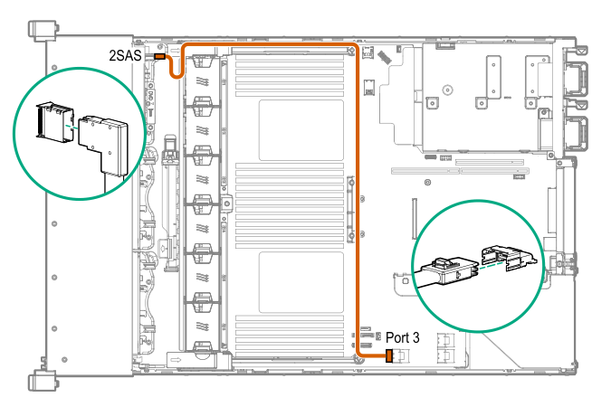
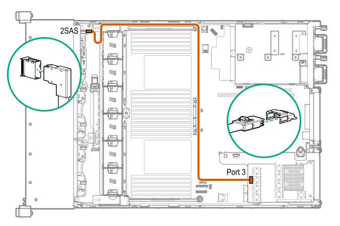

Cable routing: Front 2SFF drive option for SFF
NOTE:
Some images can launch an augmented reality (AR) view. The browser uses the device's camera to overlay the cable diagram so you can verify the cable route.
For more information, see How to use the AR template
Option 1: System board

Option 2: SAS Expander

Option 3 (not shown): A controller